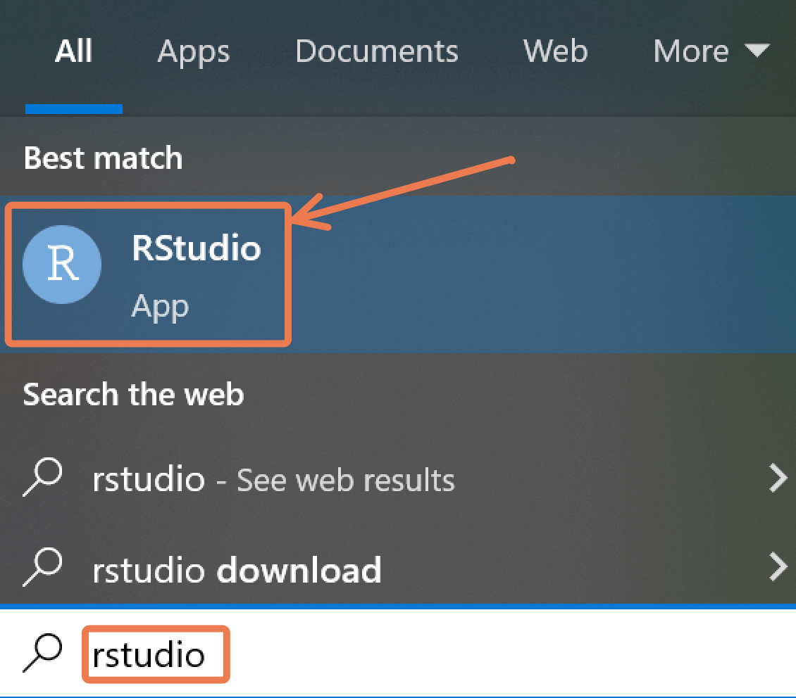
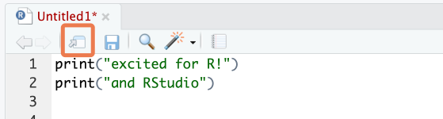
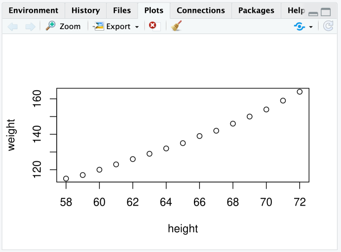
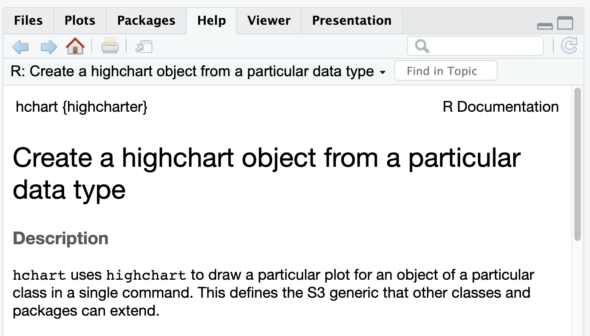

Then click on the downloaded file and follow the installation instructions.
Download, install & run RStudio
Now Click to to open the app from the start menu:

RStudio Overview
Getting Started
RStudio will open with 4 sections (called panes):
1. Source editor pane
You will write your R code/script here and it will be run in the console.
To create a new R script you can either go to File -> New -> R Script, or click on the icon with the + sign and select R Script, or simply press Ctrl+Shift+N.
Make sure to save the script.
2. Console pane
Interactively run R commands
3. Environment/history pane
Environment: view objects in the global environment
History: search and view command history
4. Files/Plots/Packages/Help pane
Files: navigate directories and
Plots: view generated plots.
Packages: manage packages (install or update)
Help: View help documentations for any package/function
Customization
Panes
The size and position of the panes can be customized.
On the top right of each pane, there are buttons to adjust the pane size.
Also, place your mouse pointer/cursor on the borderline between panes and when the pointer changes its shape, click and drag to adjust the pane size.
For more options, go to View > Panes on the menu bar.
Alternatively, try Tools > Global Options > Pane Layout.
Appearances
The overall appearance can be customized as well.
Go to Tools > Global Options> Appearance on the menu bar to change themes, fonts, and more.
The RStudio panes
By default, RStudio is arranged into four window panes.
If you only see three panes, open a new script with File > New File > R Script . This should reveal one more pane.
Before we go any further, we will rearrange these panes to improve the usability of the interface.
Then under Pane Layout, adjust the pane arrangement. The arrangement we recommend is shown below.
The RStudio panes
At the top left pane is the Source tab, and at the top right pane, you should have the Console tab.
Then at the bottom left pane, no tab options should checked—this section should be left empty, with the drop-down saying just “TabSet”.
Finally, at the bottom right pane, you should check the following tabs: Environment, History, Files, Plots, Packages, Help and Viewer.
The RStudio panes
First, open a new script under the File menu if one is not yet open: File > New File > R Script. In the script, type the following:
Code
print("excited for R!")
To run code, place your cursor anywhere in the code, then hit Control + Enter on Windows.
This should send the code to the Console and run it.
You can also run multiple lines at once.
Code
print("excited for R!")print("and RStudio!")
Now drag your cursor to highlight both lines and press Control + Enter.
To run the entire script, you can use Control + A to select all code, then press `Control + Enter.
The RStudio panes
To open the script in a new window, click on the third icon in the toolbar directly above the script.

To put the window back, click on the same button on the now-external window.
Next, save the script. Hit Control + S to bring up the Save dialog box.
Console
The console, at the bottom left, is where code is executed. You can type code directly here, but it will not be saved.
Type a random piece of code (maybe a calculation like 3 + 3) and press ‘Enter’.
If you place your cursor on the last line of the console, and you press the up arrow, you can go back to the last code that was run. Keep pressing it to cycle to the previous lines.
To run any of these previous lines, press Enter.
Environment
At the top right of the RStudio Window, you should see the Environment tab.
The Environment tab shows datasets and other objects that are loaded into R’s working memory, or “workspace”.
To explore this tab, let’s import a dataset into your environment from R.
Type the code below into your script and run it:
Code
data <- iris
You have now imported the dataset and stored it in an object named data. (You could have named the object anything you want.)
Environment
Now that the dataset is stored by R, you should be able to see it in the Environment pane.
If you click on the blue drop-down icon beside the object’s name in the Environment tab to reveal a summary.
Try clicking directly on the data dataset from the Environment tab. This opens it in a ‘View’ tab.
Environment
The broom icon, at the top of the Environment pane is used to clear your workspace.
You can also remove an object from the workspace with the rm() function.
Type and run the following in a new line on your R script.
Code
rm(data)
Notice that the data object no longer shows up in your environment after having run that code.
History
Next, the History tab shows previous commands you have run.
You can click a line to highlight it, then send it to the console or to your script with the “To Console” and “To Source” icons at the top of this tab.
To select multiple lines, use the “Shift-click” method: click the first item you want to select, then hold down the “Shift” key and click the last item you want to select.
Finally, notice that there is a search bar at the top right of the History pane where you can search for past commands that you have run.
Files
Next, the Files tab. This shows the files and folders in the folder you are working in.
The tab allows you to interact with your computer’s file system.
Try playing with some of the buttons here, to see what they do. You should try at least the following:
Make a new folder
Delete that folder
Make a new R Script
Rename that script
Plots
Next, the Plots tab. This is where figures that are generated by R will show up.
Try creating a simple plot with the following code:
Code
plot(women)

That code creates a plot of the two variables in the women dataset.
You should see this figure in the Plots tab.
Now, test out the buttons at the top of this tab to explore what they do.
In particular, try to export a plot to your computer.
Packages
Next, let’s look at the Packages tab.
Packages are collections of R code that extend the functionality of R.
it is important to know that to use a package, you need to install then load it.
Packages need to be installed only once, but must be loaded in each new R session.
All the package names you see (in blue font) are packages that are installed on your system. And packages with a checkmark are packages which are loaded in the current session.
Installing and Loading Packages
Packages are collections of R functions, data, and compiled code in a well-defined format.
There are three categories of packages.
1. Base Packages: Providing the basic functionality, maintained by the R Core Development group. Currently, there are 14 packages, these are
3. Contributed packages: Due to the open nature of R, anyone can contribute new packages at any time.
Currently, the CRAN package repository features 20394 available packages.
Code
nrow(available.packages())
Installing Packages
Option 1:Menu
Option 2:Packages Window
Option 3:Code
Code
install.packages("readxl")
Loading Packages
Code
library() # see all packages installedsearch() # see packages currently loaded
Updating R and RStudio
Updating R
Go to CRAN and download new version
More efficient: install installr package, load it, and run updateR()
Updates R and Optionally updates all packages
May be better to do this in basic Rgui
Version should update automatically in RStudio
Check/change R version under Tools>Global Options>R version
Then update the R packages with the code:
Code
update.packages(ask =FALSE, checkBuilt =TRUE)
To updating RStudio: Go to RStudio and download new version
Click on Help>Check for Updates, follow menu prompts
Viewer
Notice that the histogram above shows up in a Viewer tab. This tab allows you to preview HTML files and interactive objects.
Help
Lastly, the Help tab shows the documentation for different R objects. Try typing out and running each line below to see what this documentation looks like.
Code
?hchart?women?read.csv

Help files are not always very easy to understand for beginners, but with time they will become more useful.
RStudio options
RStudio has a number of useful options for changing it’s look and functionality. Let’s try these.
You may not understand all the changes made for now. That’s fine.
In the RStudio menu at the top of the screen, select Tools > Global Options to bring up RStudio’s options.
Now, under Appearance, choose your ideal theme. (We like the “Crimson Editor” and “Tomorrow Night” themes.)
RStudio options
Under Code > Display, check “Highlight R function calls”.
What this does is give your R functions a unique color, improving readability.
Also under Code > Display, check “Rainbow parentheses”.
What this does is make your “nested parentheses” easier to read by giving each pair a unique color.
RStudio options
Finally under General > Basic, uncheck the box that says “Restore .RData into workspace at startup”.
You don’t want to restore any data to your workspace (or environment) when you start RStudio.
Starting with a clean workspace each time is less likely to lead to errors.
This also means that you never want to “save your workspace to .RData on exit”, so set this to Never.
Command palette
The Rstudio command palette gives instant, searchable access to many of the RStudio menu options and settings that we have seen so far.
The palette can be invoked with the keyboard shortcut Ctrl + Shift + P.
It’s also available on the Tools menu (Tools -> Show Command Palette).
Try using it to:
Create a new script (Search “new script” and click on the relevant option)
Rename a script (Search “rename” and click on the relevant option)
Wrapping up
Of course, you have only scratched the surface of RStudio functionality and you can find more on the cheatsheet below:
3. Working with R Objects
Organize with an RStudio project
It is a good habit to immediately create a project for handling the analysis of new data and keep everything together.
The workspace is a working environment where R will store and remember user-defined objects: vectors, matrices, data frames, lists, variables, etc.
To Create an R project, go to
File > New Project and then choose: New Directory> Name for the directory > Click on Create Project
For more complex projects it may be useful to create sub-directories to contain data, scripts, and other documents separately.
You can also type the below function into the Console, but we won’t do that in this session.
Use summary() to see basic statistics for each variables
Subsetting
Code
iris[] # the whole data frame iris[1, 1] # 1st element in 1st column iris[1, 6] # 1st element in the 6th column iris[, 1] # first column in the data frame iris[1] # first column in the data frame iris[1:3, 3] iris[3, ] # the 3rd row iris[1:6, ] # the 1st to 6th rowsiris[c(1,4), ] # rows 1 and 4 only iris[c(1,4), c(1,3) ] iris[, -1] # the whole except first columniris$Variable1 # Also extracts the first columniris[,c("col3", "col4")]# extract by name of column
4. Reading and Writing data
Importing data is rather easy in R but that may also depend on the nature of the data to be imported and from what format.
Most data are in tabular form such as a spreadsheet or a comma-separated file (.csv).
Base R has a series of read functions to import tabular data from plain text files with columns delimited by: space, tab, and comma, with or without a header containing the column names.
With an added package it is also possible to import directly from a Microsoft Excel spreadsheet format or other foreign formats from various sources.
Importing from local files
In base R the standard commands to read text files are based on the read.table()function.
The following table lists the collection of the base R read functions.
For more details use the help command help(read.table) that will display help for all.
Details of dataset readings
Function name
Assumes header
Separator
Decimal
File type
read.table()
No
” ”
.
.text
read.csv()
Yes
“,”
.
.csv
read.csv2()
Yes
“;”
,
.csv
read.delim()
Yes
“tab”
.
.text
read.delim2()
Yes
“tab”
,
.text
Reading raw data from other sources
Import data
There are many ways to get data into R and out of R.
Import text file data using read.table() and comma separated files using read.csv() functions.
Code
# syntax: read.table("file name with full path", arguments)#<<
Code
# Examples:# Creates a data frame named myData mydata<-read.table(file ="datafile.txt",sep=" ", header=TRUE) mydata<-read.csv(file ="datafile.csv")
File names are specified in the same way as file.choose() function can be used to select the file interactively. i.e.
Code
mydata <-read.csv(file.choose(),sep=",",header=T)
Reading raw data from other sources
Useful arguments - Check these arguments carefully when you load your data
Writing the import data function can be tricky. Try the import wizard pictured above. THEN, paste the code from the Code Preview section into your script.
Easily write import data function
Excel, SPSS, SAS, etc.
The data import wizard will help you find the proper package for importing your data. For example, use…